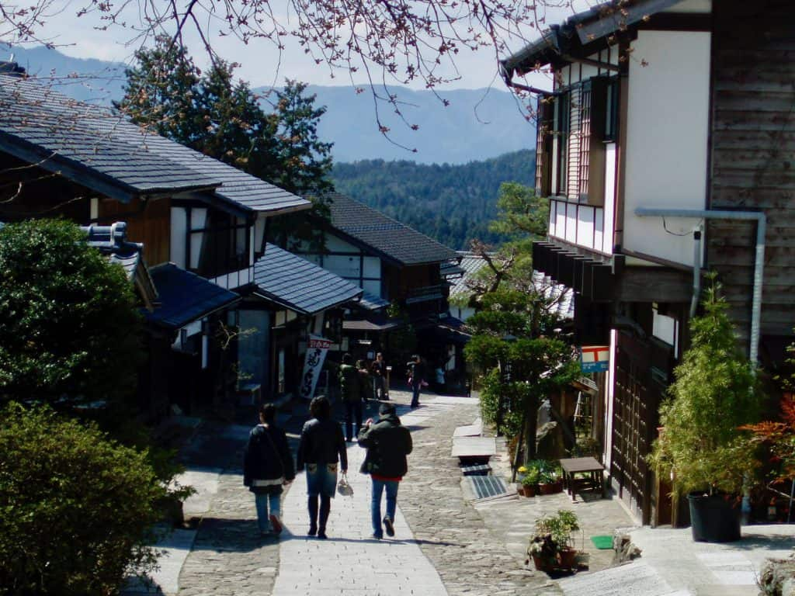

Travel Services
This section will cover various travel services available in Japan, including transportation options, accommodation types, and tour packages. It will provide insights into how to navigate the country efficiently and make the most of your travel experience.
Tourist Traps
This section will highlight common tourist traps in Japan that are often frequented by visitors and not the locals. It will offer advice on how to avoid these areas and suggest alternative destinations that provide a more cultured experience.

Etiquette in Japan
This section will inform readers about the cultural norms and etiquette in Japan, and rectify common misconceptions and misunderstandings that foreigners may have or expect due to misrepresentations in pop culture and media.